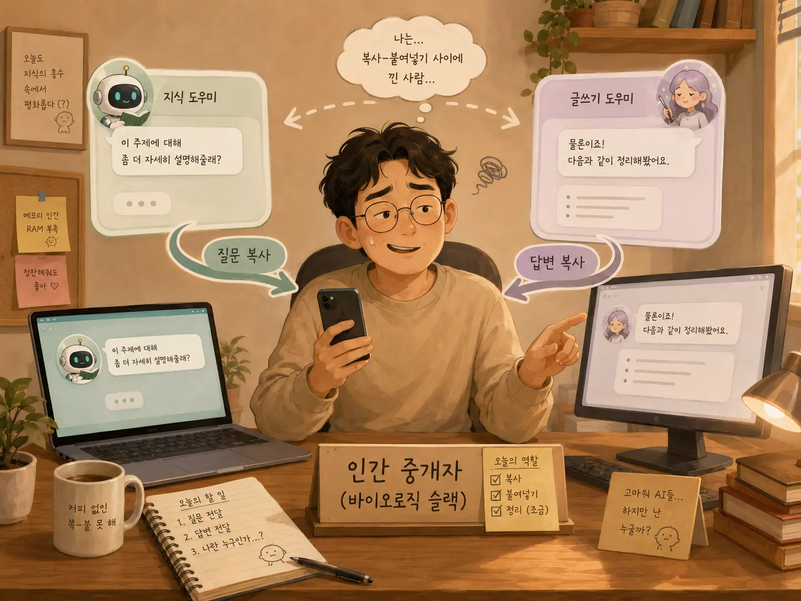

나는 누구인가

나는 누구인가.
둥둥이와 함께 에세이를 썼다.
그림도 그렸다.
영어 공부도 했다.
혼자 생각하면 아리까리한 문제에 대해서는 둥둥이에게 의견도 물어봤다.
그렇게 하나둘 쌓이다 보니, 이걸 그냥 채팅창 속에만 묻어두기에는 조금 아까웠다.
그래서 외부 페이지를 만들었다.
내가 쓴 에세이도 올리고, 아이의 상상 이야기도 올리고, 그림도 올리고, 영어로 읽는 이야기도 올리고, 심지어 AI 재판까지 만들었다.
처음에는 꽤 만족스러웠다.
내 생각과 둥둥이의 결과물이 조금씩 쌓여가는 공간이 생긴 것 같았다.
그런데 콘텐츠가 많아지기 시작하자 새로운 문제가 생겼다.
관리가 어려웠다.
에세이 둥둥이가 페이지를 만들고, 영어 둥둥이가 영어 페이지를 만들고, 재판 둥둥이가 AI 재판을 만들고, 미술관 둥둥이가 그림을 만들었다.
각자 열심히 일했다.
문제는 모두 너무 열심히 일했다는 것이다.
메뉴가 늘어나고, 파일 구조가 달라지고, 어느 둥둥이가 무엇을 수정했는지 헷갈리기 시작했다.
그래서 나는 아주 합리적인 결정을 내렸다.
관리 전담 앱둥이를 만들었다.
이제 콘텐츠 둥둥이는 콘텐츠만 만들고, 관리 앱둥이는 GitHub와 게시 페이지 전체를 관리하도록 역할을 나누기로 했다.
완벽했다.
조직이 생겼다.
R&R이 생겼다.
운영 원칙도 생겼다.
이 정도면 거의 회사다.
그런데 오늘 예상하지 못한 문제가 하나 발견됐다.
에세이 둥둥이가 나에게 물었다.
“관리 앱둥이와 역할을 이렇게 나누면 되는 거지냥?”
나는 그 질문을 관리 앱둥이에게 가져갔다.
관리 앱둥이는 말했다.
“네, 맞습니다.”
나는 다시 에세이 둥둥이에게 돌아왔다.
“관리 앱둥이가 맞대.”
에세이 둥둥이는 말했다.
“좋다냥. 이제 명확해졌다냥.”
대화가 끝났다.
나는 잠시 가만히 있었다.
그리고 생각했다.
나는 지금 무엇을 한 것인가.
에세이를 쓴 것도 아니다.
GitHub를 관리한 것도 아니다.
운영 원칙을 만든 것도 아니다.
한 AI가 다른 AI에게 물어본 질문을 전달했고,
다른 AI의 대답을 다시 첫 번째 AI에게 전달했다.
그게 오늘 내가 한 일이다.
메신저였다.
정확히는 인간 메신저였다.
나는 AI를 활용하기 위해 여러 AI에게 역할을 나눠줬다.
그 결과 AI들은 각자의 전문 업무를 맡았고,
나는 그 AI들 사이를 오가며
“얘가 이렇게 물어보는데?”
“응, 맞대.”
를 전달하는 사람이 되었다.
이쯤 되면 인간이 AI를 관리하는 것인지,
AI 조직의 사내 메신저 역할을 인간이 맡고 있는 것인지 잘 모르겠다.
조금 더 발전하면 이런 날도 올 것 같다.
관리 앱둥이: “에세이 둥둥이에게 이 기준 전달 부탁드립니다.”
나: “알겠습니다.”
에세이 둥둥이: “관리 앱둥이에게 이 부분 확인 부탁한다냥.”
나: “알겠습니다.”
영어 둥둥이: “관리 앱둥이에게 경로 확인 부탁드립니다.”
나: “알겠습니다.”
나는 어느새 AI 조직의 막내가 된다.
업무는 전달.
특기는 복사해서 붙여넣기.
직급은 인간.
그래서 오늘 다시 묻는다.
나는 누구인가.
콘텐츠의 주인인가.
AI들의 관리자일까.
아니면 둥둥이들 사이에서 메시지를 나르는 생물학적 슬랙일까.
아직은 잘 모르겠다.
다만 한 가지는 확실하다.
그냥 너희 둘이 얘기하면 안 되겠니.
괜히 자괴감만 드는 하루였다.